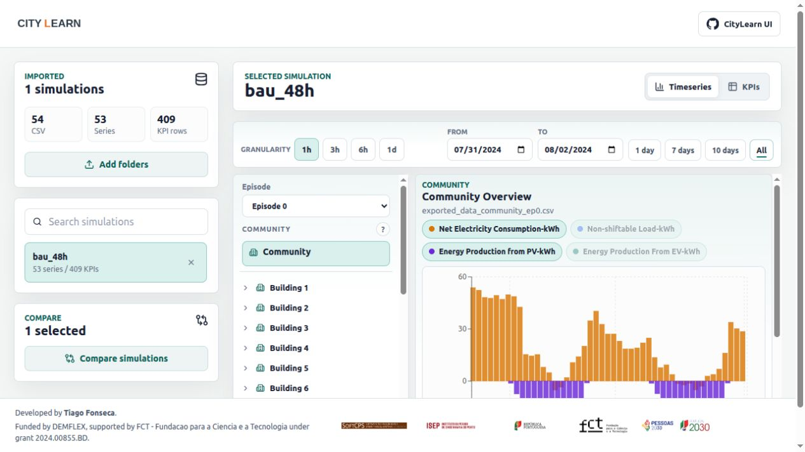
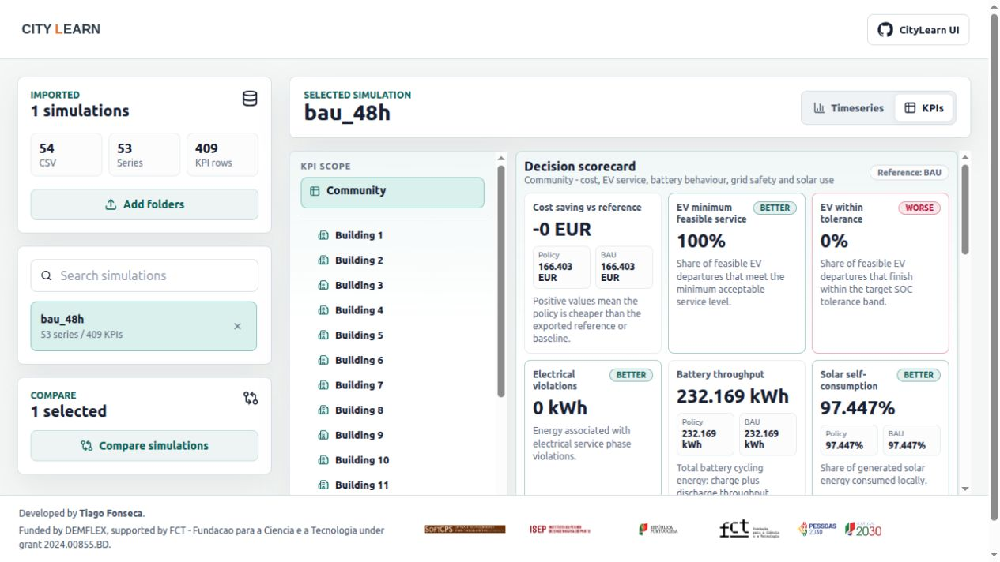

CityLearn UI
CityLearn UI opens exported simulation folders in a browser. Use it to inspect time series, read the decision scorecard and compare runs at community, building and component level.
The current interface reads the selected CSV files locally in the browser; it does not upload them to an application backend. Simulation setup, schemas and controller execution remain in Python or the CLI. For configuration, start with Features and configuration and Schema.
Export a complete run
This example runs 48 hourly states with the business-as-usual controller and
exports both time series and KPIs. It uses a public dataset available through
the installed CityLearn package.
The initial state comes from reset(); the 47 subsequent transitions produce
47 time-series rows.
"""Export a complete public-data example for CityLearn UI."""
from pathlib import Path
from citylearn.agents.baseline import BusinessAsUsualAgent
from citylearn.citylearn import CityLearnEnv
def run(output_directory="outputs/ui_exports", session_name="bau_48h"):
env = CityLearnEnv(
"citylearn_challenge_2022_phase_all_plus_evs",
episode_time_steps=48,
interface="flat",
render_mode="end",
render_directory=Path(output_directory).resolve(),
render_session_name=session_name,
random_seed=0,
)
try:
agent = BusinessAsUsualAgent(env)
observations, info = env.reset(seed=0)
terminated = truncated = False
while not (terminated or truncated):
actions = agent.predict(observations)
observations, rewards, terminated, truncated, info = env.step(actions)
output = Path(env.new_folder_path).resolve()
print(f"Import this folder in CityLearn UI: {output}")
return output
finally:
env.close()
if __name__ == "__main__":
run()
The script prints the exact folder to import, normally
outputs/ui_exports/bau_48h below the working directory. Each run should have
its own session name: reusing a name also reuses its export folder.
Choose an export mode
render_mode="end"buffers the episode and writes the histories and final KPIs when it finishes. This is convenient for short interactive experiments.render_mode="during"writes the time series as the simulation advances and exports the final KPIs at episode completion. Use this to avoid buffering a long episode’s export rows in memory.render_mode="none"disables automatic file export. After the episode,env.export_final_kpis(export_business_as_usual_timeseries=False)writes a KPI-only result to the configured session folder. Import the directory reported byenv.new_folder_pathto use the UI’s KPIs view; there will be no time-series data for that run.
Use an absolute render_directory, as in the example, to choose an explicit
output location. The exported folder contains exported_kpis.csv and
exported_data_*_ep0.csv files for the available buildings, devices and
community. Keep the filenames unchanged so the UI can identify their contents.
The UI export is a wide table with a KPI column and one column per scope;
the Python evaluate_v2() result is a long-form table for analysis.
Import and explore
Open the UI and click Choose folders.
Choose the printed run directory, or a parent directory containing several run folders. Use Add folders to import more results later.
Select a simulation in the left-hand list.
Switch between Timeseries and KPIs above the results.
Timeseries
Choose an episode and then Community, a building, or an available component in the result tree. The chart shows the columns exported for that selection. Use the date range and granularity controls to inspect a period, and the series buttons to show or hide individual signals. Ctrl/Cmd- or Shift-click buildings to compare them side by side.

Time-series exploration of the exported public example.
KPIs and the decision scorecard
The KPIs tab provides a community/building scope selector, a Decision scorecard, a larger Selected KPIs list and an expandable All KPI drill-down. Start with cost, EV service, electrical violations, battery throughput and solar use; open the full table when a result needs closer inspection.

Scorecard for the same business-as-usual run. Minimum EV service and target accuracy are separate measures: meeting a minimum does not imply ending inside the target tolerance band.
The UI presents the exported values; KPI definitions belong to the simulator’s KPIs catalogue. See How to read the scorecard for interpretation and Baselines for the meaning of the native BAU reference.
Compare runs
Import at least two simulations, then click Compare simulations. Use the imported list on the left to include or exclude runs. The first included run in that list becomes the Compare baseline. This is a display reference, distinct from the native business-as-usual comparison already included in a run’s exported KPIs.
Compare runs with matching input data, episode, timestep and service requirements. Read the metric’s units and direction together with its delta: lower cost is desirable, while higher departure-service coverage is desirable. Some indicators, such as battery throughput, need to be interpreted alongside cost and service.
The interface is developed in the CityLearn UI repository. Report interface issues there; report simulation or KPI issues in the CityLearn repository.